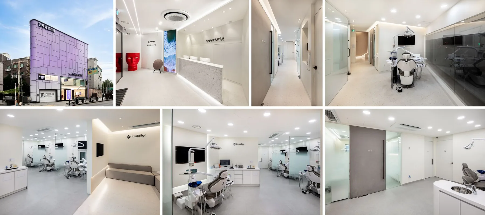
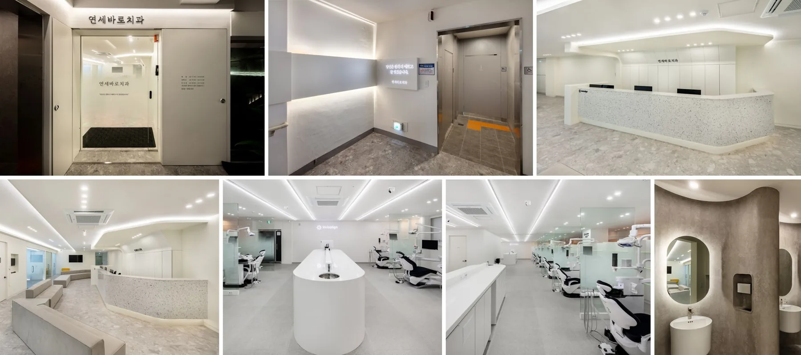

진단이 먼저입니다
인비절라인, 브라켓, 부분교정 중 무엇이 좋은지보다 “지금 교정이 필요한 상태인가”를 먼저 봅니다.
제 이름을 걸고, 첫 상담부터 유지장치까지 직접 확인합니다.
연세대학교 치과대학병원에서 교정과 수련을 마치고, 인비절라인 중심 교정 진료를 4년간 경험했습니다.
그 시간 동안 배운 게 하나 있다면 — 교정은 장치보다 ‘판단’이 먼저라는 것입니다. 좋은 결과는 좋은 치료 계획에서 나옵니다. 저는 그 계획을 직접 세우고, 직접 실행하고, 치료 과정과 유지관리를 지속적으로 확인합니다.
저는 교정치료를 시작하기 전에 먼저 확인합니다. 지금 이 치료가 정말 필요한지, 기대하는 변화가 교정으로 가능한지, 그리고 치료 후 유지할 수 있는 계획인지. 교정은 긴 치료입니다. 그래서 시작 전 설명이 충분해야 하고, 치료 중에도 같은 원장이 계속 확인해야 한다고 생각합니다.
좋은 교정은 장치를 먼저 정하지 않습니다. 얼굴, 치아, 잇몸, 성장, 생활 패턴, 유지 가능성까지 본 뒤 치료가 필요한 이유와 한계를 먼저 설명합니다.
인비절라인, 브라켓, 부분교정 중 무엇이 좋은지보다 “지금 교정이 필요한 상태인가”를 먼저 봅니다.
상담, 치료 계획, 장치 선택, 중간 점검, 유지장치 관리까지 강성태 원장이 직접 확인합니다.
예상 변화와 함께 치아 뿌리, 잇몸, 턱관절, 협조도에 따른 한계를 솔직하게 안내합니다.
교정은 긴 치료입니다. 시작 전 이해가 부족하면 치료 중 불안이 커집니다. 그래서 상담에서는 장점보다 판단 기준을 먼저 설명합니다.
단순히 예뻐지는 문제가 아니라, 치아 배열과 교합이 어떤 문제를 만들 수 있는지부터 확인합니다.
공간 부족, 입술 돌출, 치아 뿌리 방향, 얼굴 균형을 함께 보고 발치·비발치의 이유를 설명합니다.
난이도, 치아 이동량, 성장, 협조도, 내원 간격에 따라 기간이 달라질 수 있음을 먼저 안내합니다.
교정은 끝나는 날보다 유지가 중요합니다. 유지장치 착용과 관리 계획까지 상담에 포함합니다.
교정은 장치를 제거하는 날 끝나는 치료가 아닙니다. 유지장치, 정기 점검, 재발 가능성 관리까지 계획에 포함되어야 합니다.
고정식·가철식 유지장치 착용 방법과 점검 주기를 안내합니다.
연세바로치과 네트워크에서 쌓은 교정 임상 경험과 유지관리 흐름을 안양 진료에 반영합니다.
치아 이동 후 생길 수 있는 변화와 환자 협조가 필요한 부분을 미리 설명합니다.
범계·평촌 생활권에서 내원하기 쉬운 예약 동선과 주차·대중교통 정보를 정리해 제공합니다.
디지털 교정 장비와 위생 동선을 갖춘 연세바로치과 네트워크의 진료 공간입니다.


※ 사진은 연세바로치과 네트워크의 진료 공간이며, 안양점 실제 사진으로 교체될 예정입니다.
“저는 환자에게 치료를 권하기 전에 먼저 묻습니다 — ‘지금 이 치료가 이 환자에게 정말 필요한가?’ 교정이 최선이 아닌 경우엔 솔직하게 말씀드립니다. 그게 환자에게도, 저에게도 더 맞는 방식이라고 생각합니다.”
궁금한 게 있으면 뭐든 물어보세요. 솔직하게 말씀드리겠습니다. — 강성태 드림